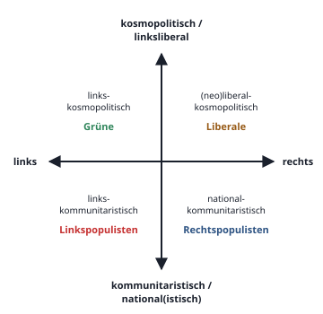

Gespaltene Gesellschaft?
Mit einem KI-Tutor lernen
Ein KI-Tutor erklärt dir diese Seite und hilft dir bei den Aufgaben. Wähl deinen Assistenten:
Mit Claude öffnen Mit ChatGPT öffnen Mit Mistral Vibe öffnen
Du nutzt dein eigenes Konto beim Anbieter. Der Assistent ist kein Angebot von lernapps.net: lernapps liefert nur Inhalte und Aufgaben. Die Wahl gilt für alle Seiten, nur auf diesem Gerät.
Kurz ausprobiert
Nach dieser Seite kannst du die neue Konfliktlinie nach Merkel erklären. Zuerst zwei Meinungen.
| A: Nein | B: Ja |
|---|---|
| Die große Mehrheit steht hinter der Demokratie. | Wir haben verlernt zu streiten. |
| Es gibt nur eine laute Minderheit dagegen. | Jeder kennt nur noch seine eigene Blase. |
Aufgabe
Lösung
Position B richtige Antwort
Sie sagt, die Diskussionskultur sei eng geworden und jeder bleibe in seiner Blase.
Position A
Position A sieht keine Spaltung, nur eine laute Minderheit.
B erklärt die Spaltung mit fehlender Streitkultur, A bestreitet eine Spaltung.
Das steckt dahinter
Merkel sieht eine neue Konfliktlinie neben links und rechts: Kosmopolitismus gegen Kommunitarismus. Auslöser sind Globalisierung und Kulturwandel.

Zwei Konfliktlinien nach Wolfgang Merkel (2022). Schau, wo die Parteifamilien liegen.
Quelle: eigene Zeichnung. Lizenz: CC-BY-4.0.| Kosmopoliten | Kommunitaristen |
|---|---|
| hohe Bildung und Einkommen, mobil | geringere Bildung und Einkommen, weniger mobil |
| offen für Vielfalt, offene Grenzen | Gemeinschaft, Nation, kontrollierte Grenzen |
| Gewinner der Globalisierung | Verlierer der Globalisierung |
Merke
- Neue Konfliktlinie: Kosmopolitismus – Kommunitarismus.
- Ursache: Globalisierung und Kulturwandel.
- Liegt quer zu links und rechts.
Jetzt du
Aufgabe
Lösung
Richtige Antwort: links und kosmopolitisch – Grüne; rechts und kosmopolitisch – Liberale; links und kommunitaristisch – Linkspopulisten; rechts und kommunitaristisch – Rechtspopulisten
Die zweite Achse trennt Parteien, die auf der Links-Rechts-Achse nah beieinander liegen.
Aufgabe
Lösung
überdurchschnittliche Bildung und Einkommen richtige Antwort
Sie haben viel Human- und kulturelles Kapital.
räumlich und beruflich mobil richtige Antwort
Sie leben und arbeiten oft über Grenzen hinweg.
Vorliebe für eng kontrollierte nationale Grenzen
Das kennzeichnet Kommunitaristen.
eher Verlierer der Globalisierung
Kosmopoliten gelten als Gewinner der Globalisierung.
Kosmopoliten sind gebildet, mobil, offen – und profitieren von der Globalisierung.
Aufgabe
Lösung
Richtige Antwort: Die Aussage stimmt nicht.
Sie kommt hinzu und liegt quer dazu. Darum braucht man zwei Achsen.
Offene Aufgabe
Ist die Gesellschaft gespalten? Beurteile mit 3 Stichpunkten: ein Argument dafür (Reckwitz oder Merkel), ein Argument dagegen, dein Urteil.
Eine gute Antwort enthält:
- Dafür: Reckwitz sieht eine Polarisierung der Mittelklasse; Merkel eine neue Konfliktlinie zwischen Kosmopoliten und Kommunitaristen. Nachlesen
- Dagegen: Die große Mehrheit steht hinter der Demokratie; laut ist vor allem eine Minderheit. Nachlesen
- Das Urteil ist begründet und wägt beide Seiten ab. (Form)
Lösung
- Dafür: Merkel zeigt eine neue Konfliktlinie – Gebildete, mobile Kosmopoliten gegen Kommunitaristen, die sich als Verlierer sehen.
- Dagegen: Die große Mehrheit steht hinter der Demokratie; laut sind vor allem Minderheiten.
- Urteil: Es gibt tiefe Gräben bei Kultur und Chancen, aber keine völlige Spaltung – Streit gehört zur Demokratie.
Als Nächstes, im letzten Kapitel: Kursarbeitstraining.
Fehler gefunden oder eine Idee für diese App?